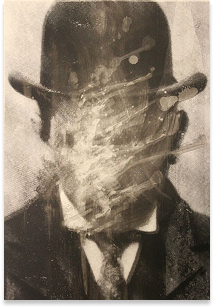
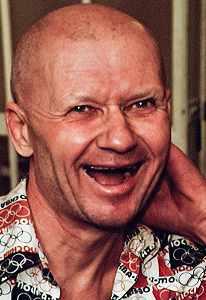

криминалистика
История человечества связана с историей преступлений. Здесь собраны досье на самых известных и жестоких маньяков XIX и XX веков.
Архив
История человечества связана с историей преступлений. Здесь собраны досье на самых известных и жестоких маньяков XIX и XX веков.

Джек Потрошитель - прозвище серийного убийцы, действовавшего в районе Лондона - Уайтчепел. Личность преступника никогда не была установлена, что породило множество теорий заговора.
Его стиль отличался особой жестокостью!
Один из самых известных маньяков в истории США. Теодор был харизматичен, образован и привлекателен, что помогало ему вызывать доверие у жертв. Он часто притворялся раненым, чтобы ему помогали донести вещи до машины.
Казнен на электрическом стуле!

Советский серийный убийца, известный как "Ростовский потрошитель". Действовал на территории РСФСР, Украины и Узбекистана.
Жертвами становились преимущественно дети и женщины!
Серийный убийца, действовавший в Северной Калифорнии. Стал известен благодаря шифрованным письмам, которые рассылал в редакции газет, насмехаясь над полицией.
Личность Зодиака до сих пор остается одной из главных загадок криминалистики!
| Имя | Период | Страна | Жертвы | Судьба |
|---|---|---|---|---|
| Джек Потрошитель | 1888 | Великобритания | 5+ | неизвестен |
| Теодор Банди | 1974-1978 | США | 30+ | казнен |
| Андрей Чикатило | 1978-1990 | СССР | 53 | расстрелян |
| Зодиак | 1968-1974 | США | 5 | неизвестен |